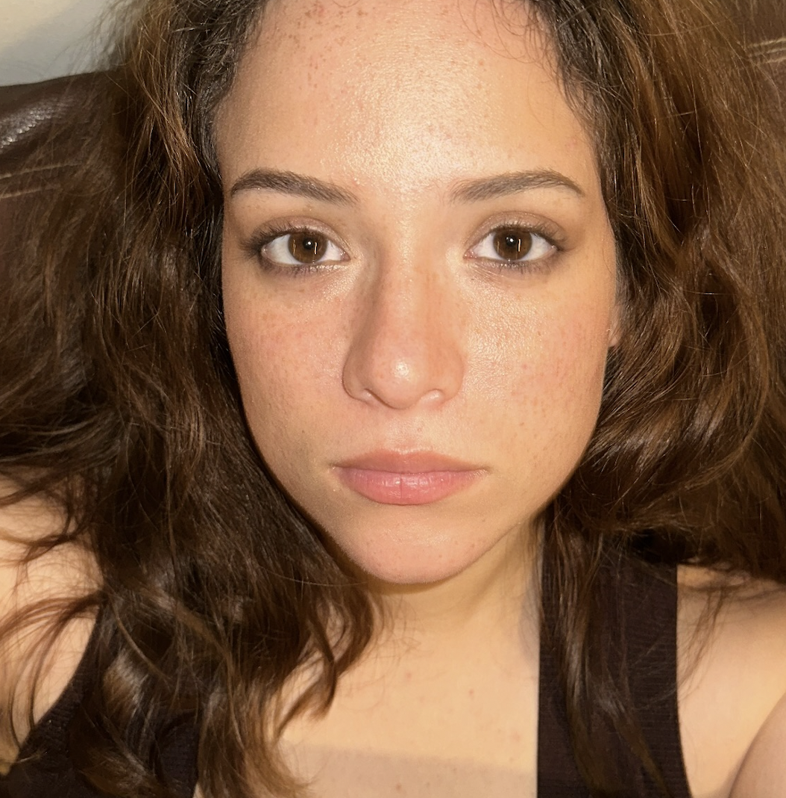

Arte
Me gusta escribir y expresarme a través del arte.
Estudiante, un poco de Costa Rica y un poco de El Salvador. Me gusta el arte, el deporte y algún día quiero vivir de programar.

Me llamo Nicole Meléndez. Estudio Ingeniería de Software y Negocios Digitales en la ESEN. Nací en Costa Rica, pero crecí en El Salvador, así que siento que le pertenezco a ambos países.
Soy una persona bastante emocional, me muevo mucho por lo que siento y me gusta el arte. De chiquita veía todo más mágico; ahora soy más realista, pero sin perder esa magia del todo.
Tengo varias metas, aunque la que más me importa es tener estabilidad, en todos los sentidos.
Me gusta escribir y expresarme a través del arte.
Jugué volleyball durante 5 años. Actualmente solo me mantengo activa en el gimnasio.
Estoy tomando clases. Es otra forma de usar las emociones, pero en escena.
Hablo inglés pero quiero llegar a cinco idiomas.
Quiero viajar por el mundo y trabajar de programadora. También me gusta mucho la idea de inventar algo mío. Pero primero y lo que más me importa es la estabilidad.